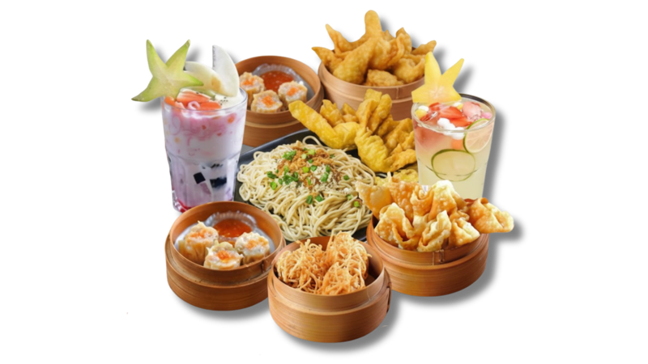

🌶️ MIE PEDAS KEKINIAN
MIENEWMIND
Nikmatnya Pas, Harganya Bersahabat
Nikmati sajian lezat dengan pilihan menu yang terjangkau, tanpa mengurangi kualitas rasa dan kenyamanan. Mie Newmind hadir untuk menjadi pilihan tepat di setiap momen makanmu.

ABOUT US
Tentang Mie Newmind

Mie Newmind Mie Newmind merupakan brand kuliner mie pedas kekinian di Indonesia yang menawarkan cita rasa khas dengan konsep modern. Hadir sebagai tempat makan yang nyaman, Mie Newmind cocok untuk menikmati hidangan lezat bersama teman dan keluarga.
Didukung harga yang terjangkau dan pilihan menu yang beragam, Mie Newmind siap menemani setiap momen kebersamaan dengan lebih menyenangkan.
Selengkapnya →Perjalanan Kami
2021
Mie Newmind didirikan oleh Mardigu Wowiek Prasantyo dengan tujuan menghadirkan kuliner mie pedas berkualitas dengan harga terjangkau. Mulai tumbuh dengan konsep kemitraan gerobak kecil yang memberdayakan UMKM.
2022
Semakin banyak mitra bergabung. Menu mie pedas dengan nama unik seperti Mi Bupati, Mi Gubernur, dan Mi Presiden mulai dikenal luas oleh masyarakat.
2023
Berhasil tumbuh dengan 500+ kemitraan outlet kecil tersebar di berbagai daerah Indonesia. Kuota kemitraan outlet kecil terpenuhi dan resmi ditutup.
2024
Mie Newmind mulai mengembangkan konsep dari gerobak menjadi resto yang lebih besar dan nyaman, memperluas penyebaran cabang di berbagai wilayah Indonesia.
VISIT US
Lokasi & Reservasi
Lokasi Kami
Tempatnya mudah dicari, suasananya nyaman, dan makanannya bikin nagih. Mie Newmind siap menemani waktu makanmu.
Jl. Garon Raya, Candi, Bagi, Kec. Madiun, Kabupaten Madiun, Jawa Timur
07.00 – 23.00 WIB●
BUKA GOOGLE MAPS →Reservasi
Ingin makan tanpa khawatir kehabisan tempat? Reservasi sekarang dan nikmati momen makan yang lebih tenang di Mie Newmind.
WhatsApp085604030473
DELIVERY
Pesan via GoFood

Pesan via GoFood
Tersedia delivery online via GoFood (Gojek). Pesan sekarang dan nikmati Mie Newmind di rumahmu dengan mudah dan cepat.
ORDER VIA GOFOOD →